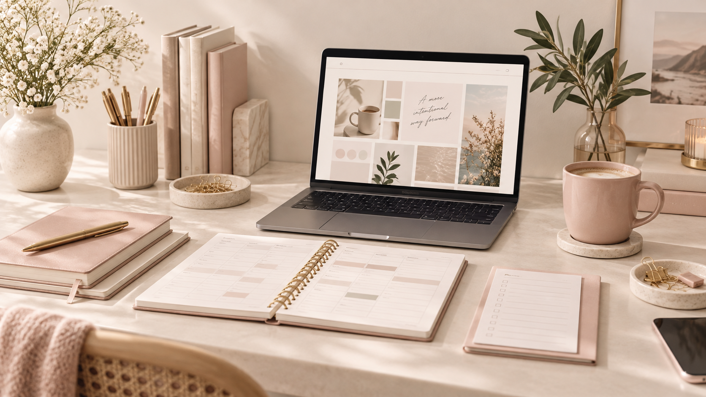
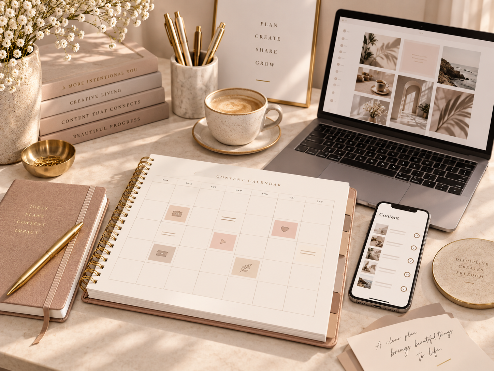
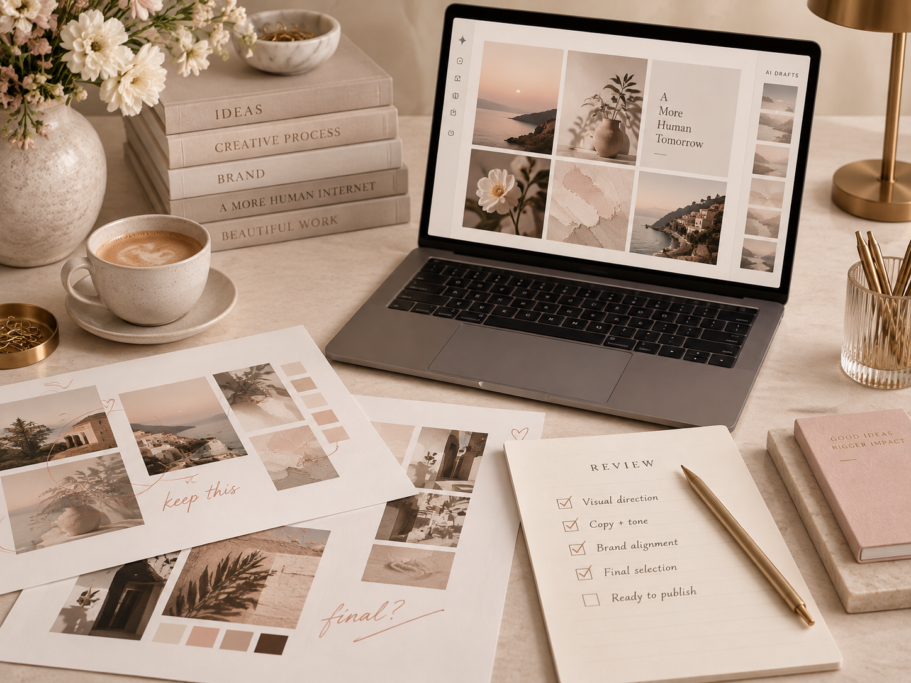

Consistency
Showing up
Keeping the commitment to create, share, and connect.
Content to Income · Day Five
I can be consistent and still be doing entirely too much.
Showing up every day is one thing. Having a process that makes showing up manageable is something else. Day Five is about learning the difference—and putting it into practice.

What I learned
I need both: a commitment to showing up and a way of working that respects my time and effort. Being consistent does not automatically mean the process is efficient.
Consistency
Keeping the commitment to create, share, and connect.
Efficiency

Being intentional about the time and effort it takes—without cutting corners.
How I'm applying it
The rebrand gives me a place to practice this. I can keep the parts that work and put my attention into the message, the creative decisions, and the final review.
Reusable graphics

My morning prayers can have a new message without needing a completely new graphic every morning. The reusable weekday images stay; the prayer goes in the caption.
Keep the community ritual. Stop redesigning the foundation.
Intentional planning

Planning the topics, captions, and posting times gives each piece a purpose. I can schedule where possible and keep reminders for posts that still need to go up manually.
A clear plan—not a fresh scramble for every post.
Repurposed ideas
My pinned-post ideas became carousels and video versions. I can adapt the pacing and presentation for each format instead of treating every version as a brand-new project.
Reuse the idea. Give each version the attention it needs.
Creative review

Being efficient does not mean accepting every output. I still check the words, visuals, likeness, and overall message to make sure the finished work represents me.
Less unnecessary work does not mean less care.
In my own words
Not just a posting habit. A process I can keep up with.
My takeaway from Day 5? I can be consistent and still be doing entirely too much. 😂
Showing up every day is one thing. Having a process that makes showing up manageable is something else.
With my Jaida Mayrie rebrand, I've been creating reusable graphics, planning my posts, and turning one idea into a carousel and a video instead of starting from zero every time.
My morning prayers can have a new message without needing a completely new image every morning. My content can still sound like me without me rebuilding the whole process for every post.
That's the difference I'm learning.
Consistency is showing up. Efficiency is being intentional about the time and effort it takes to do it.
And being efficient doesn't mean rushing, cutting corners, or letting AI make every decision. I still have to check the work and make sure it represents me.
I don't just want to keep posting. I want a process I can keep up with.
Less unnecessary work. More intentional follow-through.
THE DAY FIVE CREATION
I turned my Day Five takeaway into a video about creating a sustainable content process. The goal isn’t just to show up consistently—it’s to work more intentionally.
This video brings my takeaway to life: reusable systems, intentional planning, and creative decisions that make consistency sustainable.
The goal isn't to show up exhausted.
The goal is to build something I can sustain.